Beatrice Red Star Fletcher > Bea's Big Laughs
A podcast featuring interviews with mostly female comedians. Listen using iTunes or Spreaker and follow on Instagram.
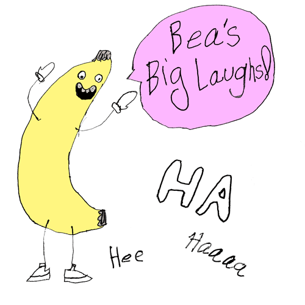
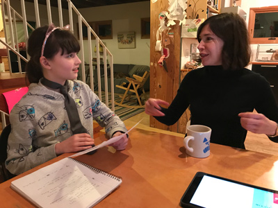
Bea interviewing Carrie Brownstein at Bea’s house in Portland, Oregon on November 15th 2017

D'Arcy Carden and Bea after their interview in Los Angeles on January 26, 2018

Drawing Bea made for D'Arcy Carden
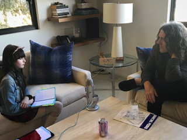
Weird Al Yankovic and Bea during their interview in Los Angeles on January 27, 2018
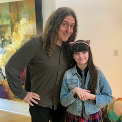
Weird Al Yankovic and Bea after their interview in Los Angeles on January 27, 2018
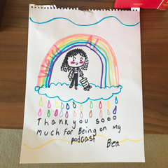
Drawing Bea made for Weird Al Yankovic
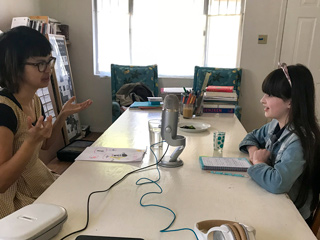
Charlyne Yi and Bea during their interview in Los Angeles on January 28, 2018
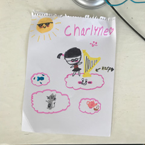
Drawing Bea made for Charlyne Yi
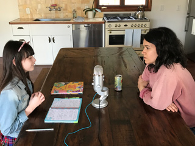
Abbi Jacobson and Bea during their interview in Los Angeles on January 28, 2018
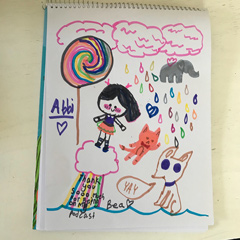
Drawing Bea made for Abbi Jacobson
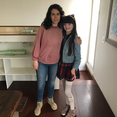
Abbi Jacobson and Bea after their interview in Los Angeles on January 28, 2018
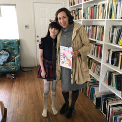
Kristin Schaal and Bea after their interview in Los Angeles on January 27, 2018
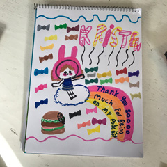
Drawing Bea made for Kristin Schaal
{kind=link}
{kind=link}


{kind=link}
{kind=link}
{kind=link}
{kind=link}
{kind=link}
{kind=link}
{kind=link}
{kind=link}
{kind=link}
{kind=link}